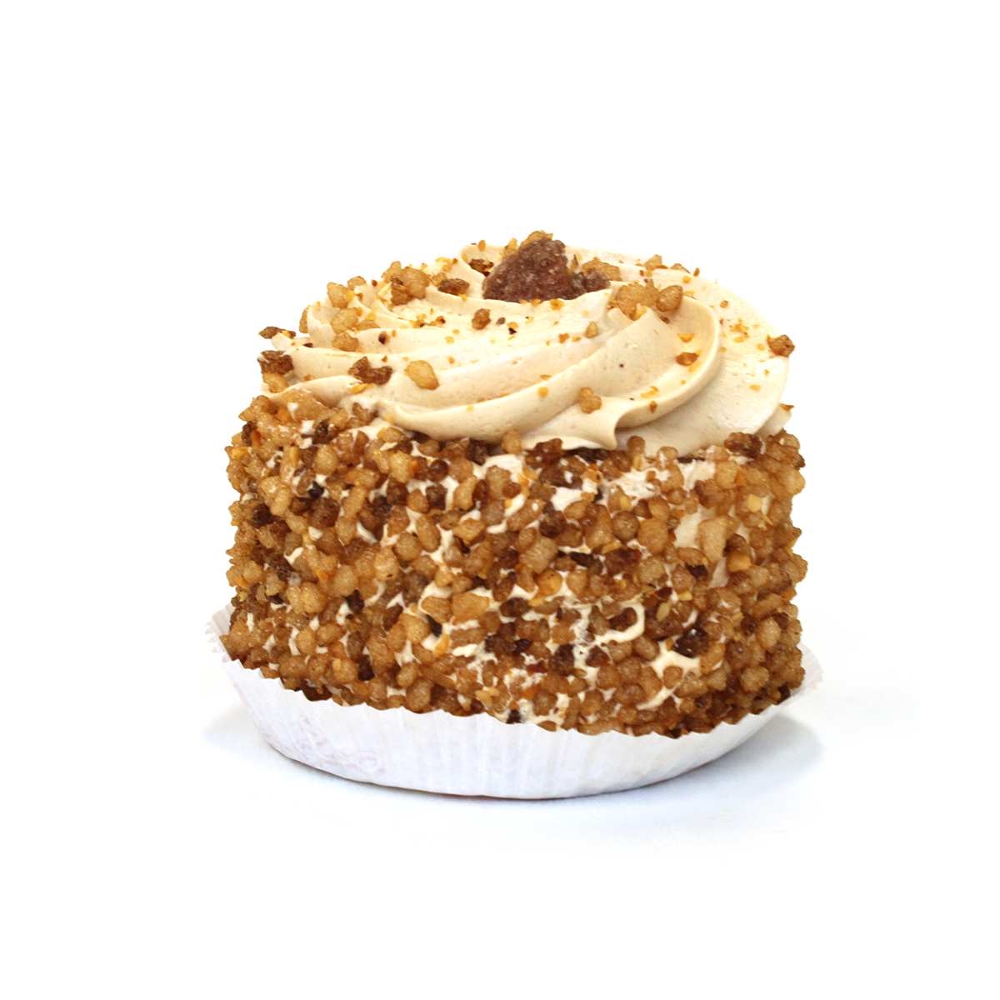

Onze bakkerij biedt ongetwijfeld het beste creme en progressgebak, en ik wil graag uitleggen waarom dit het geval is. Als bakker, heb ik persoonlijk veel toewijding en passie gestoken in het perfectioneren van ons creme en progressgebak, en ik ben er trots op de beste te kunnen leveren aan onze gewaardeerde klanten. Allereerst is de kwaliteit van de ingrediënten van het grootste belang voor ons. We gebruiken enkel de allerbeste grondstoffen, waaronder verse room, echte vanille-extract, en de fijnste chocolade. Onze aandacht voor detail begint bij het selecteren van deze hoogwaardige ingrediënten, en we geloven dat dit de basis vormt voor de ongeëvenaarde smaak van ons creme en progressgebak. Bovendien hechten we veel waarde aan traditie en vakmanschap. Onze bakkers hebben jarenlange ervaring en hebben de kunst van het maken van gebak tot in de puntjes geperfectioneerd. Elk gebakje wordt met de hand bereid, en we besteden de nodige tijd en zorg om ervoor te zorgen dat elk gebakje voldoet aan onze hoge normen. Dit ambachtelijke vakmanschap is wat ons onderscheidt en wat ons gebak zo bijzonder maakt. Daarnaast streven we voortdurend naar innovatie en verbetering. We blijven experimenteren met nieuwe smaken en technieken om ervoor te zorgen dat ons assortiment altijd fris en opwindend blijft. Of het nu gaat om nieuwe vullingen, smaakcombinaties of decoratieve elementen, we rusten niet voordat we zeker weten dat we het allerbeste bieden aan onze klanten. Tenslotte is klanttevredenheid onze hoogste prioriteit. We luisteren naar de feedback van onze klanten en staan altijd open voor suggesties. Het is ons doel om niet alleen de verwachtingen van onze klanten te overtreffen, maar ook om hen een onvergetelijke ervaring te bieden bij elke hap van ons creme en progressgebak. Samengevat, ons creme en progressgebak is het beste omdat we geen concessies doen aan kwaliteit, omdat we vasthouden aan traditioneel vakmanschap, omdat we blijven innoveren en omdat we toegewijd zijn aan de tevredenheid van onze klanten. Ik ben er trots op om deel uit te maken van dit proces en om ons heerlijke gebak met u te delen.
